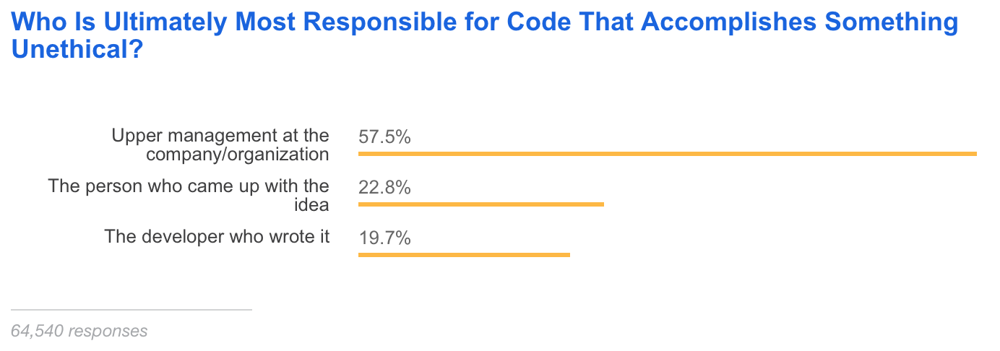
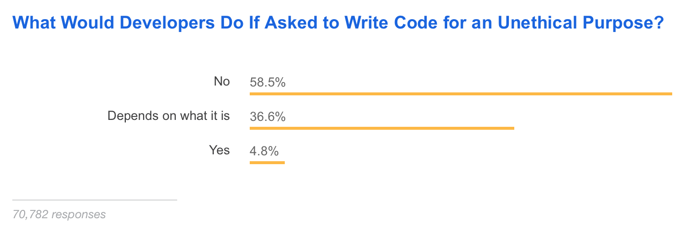
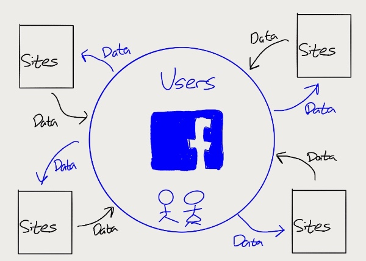
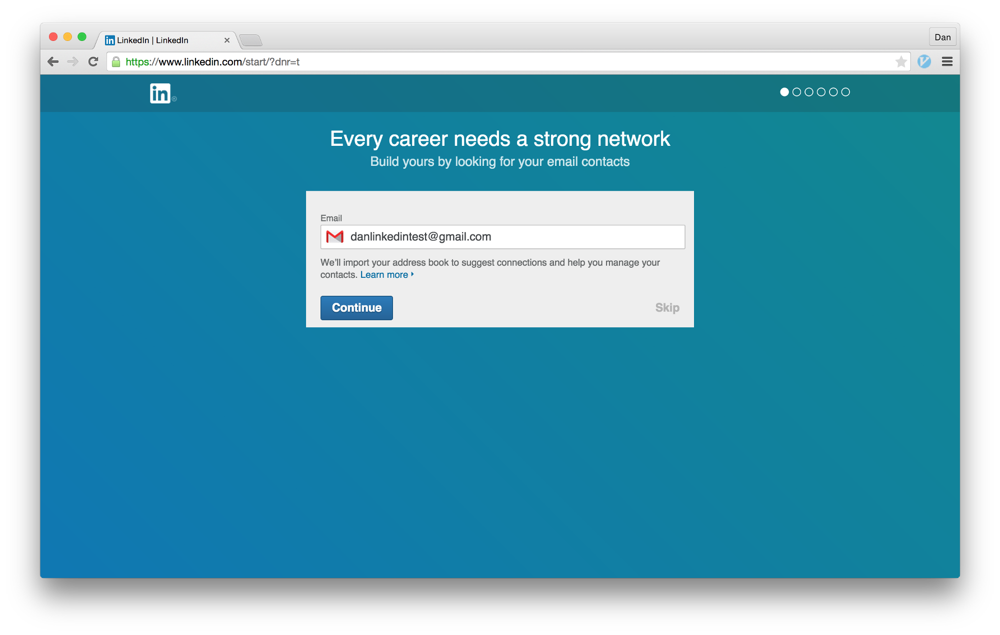
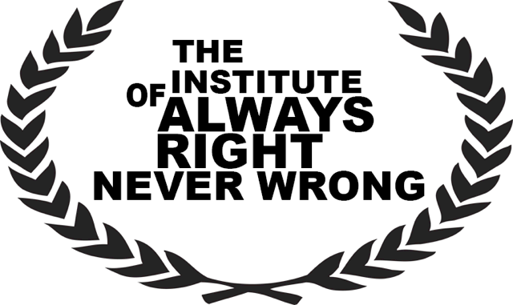
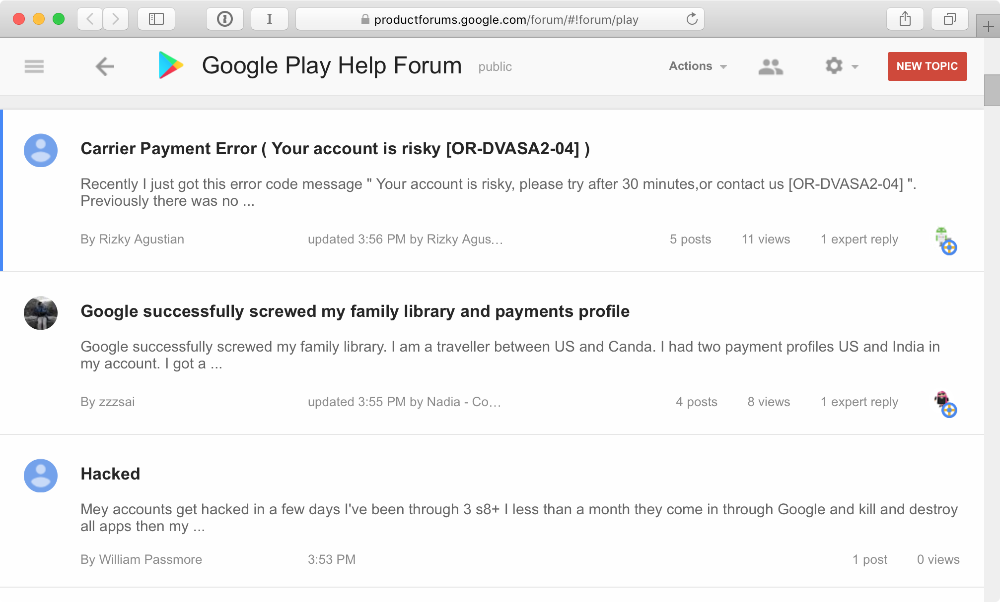
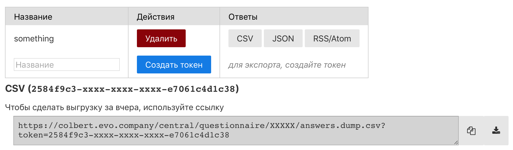
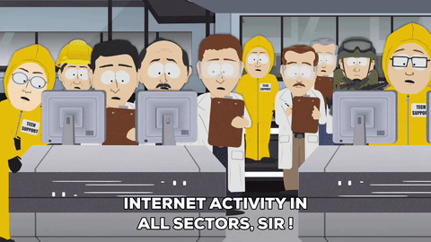
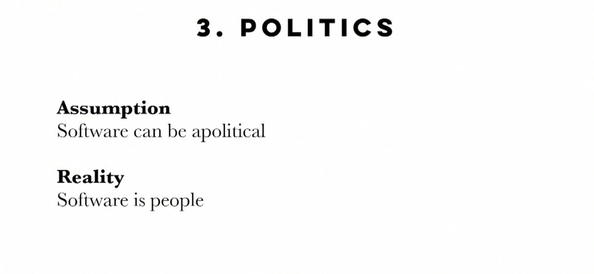

0x0BADC0DEКак быть чуточку этичнее
Не так давно, StackOverflow опубликовал результаты ежегодного опроса разработчиков. Среди холиворных вопросов вроде «Твой любимый редактор», были вопросы про этику

Например, «Кто отвечает за код, который делает что-то неэтичное?». Приблизительно 60% считает, что в неэтичном результате работы их кода, виновато руководство и/или менеджмент компании
Вы можете сказать «Что есть ‘этичное’? Это же нечто субъективное и [отвращёно] гуманитарное. Зачем мне это знать?»
Я не отвечу на первый вопрос, потому что в определение слов не умею, а Википедию вы и сами прочитаете, если будет интересно

Что же касается «Зачем», то затем, что вы — люди и решаете проблемы людей. И, судя по тому же опросу на StackOverflow, 95% из вас не стали бы писать код для решений, которые добавят проблем другим людям
В этой статье я постараюсь рассказать о том, как не писать неэтичный код

The Facebook Brand – Stratechery by Ben Thompson
Во время, когда я набираю эти слова, журналисты промывают кости Фейсбуку. Несколько лет назад те надеялись получать ещё больше информации от сторонних сервисов в обмен на свою информацию. «Хотите знать религиозные предпочтения юзера? Его друзей? Да пожалуйста! Если вы построите на нашей платформе, то получите больше информации, чем можете представить!». Чем воспользовались Cambridge Analytica и собрали профили 50 миллионов 87 миллионов человек, хотя личное согласие на это дала четверть миллиона

Или, например, LinkedIn, который заплатил 13 миллионов за «нежелаемые емейлы» (aka «спам»). Компания пользовалась «тёмными паттернами», чтобы убедить пользователей в необходимости дать доступ к их контактам
Но законодательство начинает догонять подобных «дисрапторов»
В мае этого года, в ЕС вступает в силу Общий Регламент по Защите Данных (GDPR, General Data Protection Regulation). Так, на компании, контролирующие личную информацию, возлагается ответственность за её сохранность. Плюс, компании теперь должны доступно доносить до пользователей причины для сбора личной информации и получать явное согласие на это. Хорошие tl;dr на тему: раз и два
Штраф за нарушение регламента составляет до 20 миллионов евро или 4% её глобального оборота. Эти постановления направлены на защиту пользователей, и следовать им будет легче, если заранее волноваться о них
Рассмотрим абсолютно реалистичный пример, только заменим эфемерные «данные» на что-то более осязаемое…
Вам кинули задачу «Собрать всех котят и закинуть их на безжизненный остров где-то в океане». Вы можете посчитать, что:
Вы берёте тикет, строите за спринт вундервафлю для сбора котят, сканируете соцсети на любителей котов, скармливаете их адреса этой вундервафле, закрываете три сторипоинта и покупаете на зарплату корма для Мухтара. Может даже расскажете на конференции, какую крутую машину по сбору котят вы построили. Вы можете спокойно выспаться перед началом очередного спринта, потому что вам всё равно на начавшуюся войну за последние оставшиеся фотографии с котейками

Вероятнее всего, ваши заказчик и менеджер специализируются не на том, на чём специализируетесь вы. Их опыт разработки может ограничиваться только тем, что они подслушали у кулера. Это абсолютно нормально, но стараясь сделать вашу работу проще и беспокоясь о том, что они "ничего не делают", менеджеры могут подробно расписать то, как вам надо сделать то, что они хотят. Вместо того, чтобы рассказать что именно они хотят
Но у вас больше знаний о том, способах достижения того или иного желания заказчика. Вы знаете, что могут компьютеры в принципе и ваша инфраструктура в частности (или «ваш бюджет на AWS»). Вы знаете, какой UI вызовет проблемы из-за совместимости браузеров. И вы знаете, что в работе с часовыми поясами полегло множество хороших разработчиков
Это классическая «Проблема XY»
Знай вы проблему, вы бы решили её проще и дружелюбнее к котятам
И не пытайтесь угадать цель, узнавайте её у заказчика. Иначе вы можете зря потратить своё время и чужие деньги. Если вам всё-таки заплатят
У разработчиков захватывает дух от возможности создать нечто огромное. Что-то, что затронет миллионы миллиарды людей. Но для этого, нужно построить множество слоёв абстракции. И не только в коде

Кто пытался найти контакты живой поддержки Гугла или Стима? В процессе создания своих систем, Гугл и Валв абстрагировались от пользователей настолько, насколько смогли. Проблема одной, десяти, тысячи пользователей неважна, когда у тебя есть ещё миллиард. И этот миллиард ещё и должен помочь себе сам, общаясь на форумах поддержки
Десятки страниц переписи тех, у кого такая же проблема, что у тебя. Множество легенд о том, как её починить. И мизерная возможность исправить проблему, если она возникла по твоей вине, потому что никто не предоставит доступ к бекапам или к критичному коду
Теряется возможность договориться с человеком, который сможет понять и исправить вашу ошибку. Можно, как адепты криптовалют, говорить, что банки не нужны, потому что они только создают проблемы. Но, адепты забывают, что эти же банки помогут, когда вы потеряете свою карточку или захотите вернуть деньги, ушедшие мошенникам. Тогда как, в полностью автоматизированном мире, каждый сам за себя. Код знает только те ошибки, которые знали его создатели.
Этика не масштабируется. С масштабом теряется эмпатия и понимание проблем тех, кто «кормит» вашу систему. Просто потому, что они превращаются в ещё одну строчку в БД, ещё одним «мяу» в бездушном океане
Когда мы разрабатываем, мы строим предположения и опираемся на наши предрассудки. «Никто сюда не кликнет». «Здесь всё понятно». «Все могут это сделать»

Личный пример: пользователи хотят экспортировать данные
Видите серенькое «для экспорта, создайте токен»? Это я вместо общения с теми, кто будет пользоваться экспортом, подумал «я ж девелопер, сделаю так, как всем девелоперам будет удобно. сделаю APIшку». Сделал, работает, довольный
Только экспортом пользуются люди, ни разу не нуждающиеся в API. Им нужен файлик, чтобы перетащить его в гуглодоку. «Но ведь я и все мои друзья умеют curl и jq». Лол, пофиг, ты я не дружу со всеми пользователями. И то, что для меня — эджкейс (ну не качаю я CSV), то для пользователей может быть основным занятием с сайтом
Ок, проблема в предубеждениях. Попробуем избавиться от человеческих недостатков с помощью объективно верного кода
Небольшое отступление. Как убить вампира?
Вампира можно убить как угодно, потому что они вымышлены. Я могу написать книгу про вампиров, в которой они умирают от винила на алюминии, и буду прав
Так же и с предсказаниями об искусственном интеллекте. ИИ может решить любые проблемы, дайте только достаточно времени и денег
ИИ разрабатывают люди, которые подбирают входные данные и подтверждают результаты работы сетей. Эти люди, в большинстве своём, выглядят похоже, имеют схожий опыт и круг общения. В процессе работы, в сеть (не всегда осознанно) закладываются опыт и предрассудки разработчиков

Так получаются, казусы вроде «никто не будет грустить о пропаже котеек». Когда все твои друзья — собачатники, и ты считаешь, что можно пренебречь небольшим процентом ложноположительных, то очень вероятно, что в этот процент попадут многие из вне твоего круга общения
Так ли мы плохи, как мы выглядим, пока «быстро двигаемся и ломаем вещи»? Возможно…
Но у меня остаётся надежда, что кто-то прочитает эти слова и также задумается о последствиях. О том, что получается, когда люди, которые не хотят знать мир и других людей, имеют возможность влиять на них

Мир противится быть вписанным в модели, он запутанный и разнообразный. Большая часть того, что мы видим и думаем, было создано людьми. Мы можем притворяться, что наш софт — аполитичный и не нуждается в «чужом» мнении. Но чем раньше мы свыкнемся с тем, что наш труд — для людей, тем лучше
Media List:
Если из всей этой простынки вы запомните только десять слов, то пусть это будут эти слова:
Антон Веринов, март 2018